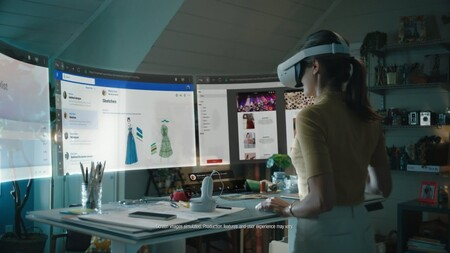

FUTURO
---------------------------------------------------------------------------------------------------------------------------------------------------
A medida que avanza la tecnología se van implementando algunas herramientas las cuales nos facilitan la interacción humano / computadora, asistentes virtuales y “wereables” de realidad aumentada permitirán la creación de una nueva era digital.
Estos dispositivos son controlados a través del reconocimiento de movimiento de los dedos empleando cámaras integradas de video y también a través de controles especiales que se activan con las manos.
Los lentes de realidad aumentada también podrían ser controlados a través de la voz, simplemente dando instrucciones que activen las diferentes funciones de los lentes. Entre los jugadores más importantes se encuentran Google y Amazon
El mundo digital futurista a mediano plazo es uno donde puedas elegir unos lentes en lugar de un smartphone, con el diseño que más te guste, que tengan todas las aplicaciones para acceder a internet, a tus redes sociales, llamar, jugar, aprender y crear; y que puedas controlar a través de la voz ó con simples movimientos de tus brazos.
---------------------------------------------------------------------------------------------------------------------------------------------------
Aqui algunos ejemplos de interacciones humano computadora aplicada a nuestra era:
- Usabilidad: Diseñar interfaces que sean fáciles de usar y comprender para los usuarios.
- Accesibilidad: Garantizar que las interfaces sean accesibles para personas con discapacidades, como problemas visuales o de movilidad.
- Interfaz de usuario: Crear una interfaz intuitiva y atractiva que permita a los usuarios interactuar de manera efectiva con un sistema.
- Principios de diseño: Aplicar principios de diseño centrados en el usuario, como la consistencia, la retroalimentación clara y la simplicidad.
- Testeo de usuarios: Realizar pruebas con usuarios reales para identificar problemas y mejorar la experiencia de interacción.
- Dispositivos de entrada: Considerar diferentes dispositivos de entrada, como teclados, ratones, pantallas táctiles o comandos de voz.
- Feedback: Proporcionar retroalimentación visual o auditiva para informar a los usuarios sobre el estado de las acciones realizadas.
---------------------------------------------------------------------------------------------------------------------------------------------------
